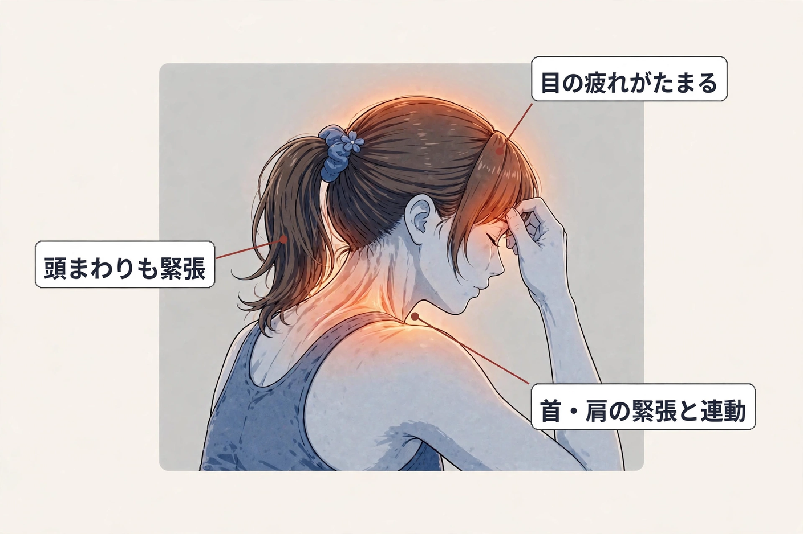

頭痛
美容整体ステラ・ポラリス東三国｜大阪市淀川区東三国・東三国駅徒歩5分・女性向け

首・肩の緊張をゆるめて、頭の重さが抜ける感覚へ
頭が重い、こめかみや後頭部が締めつけられるように感じる——頭痛の中でも、首や肩の筋肉の緊張と関わる「緊張型」と呼ばれるタイプは、女性に多いと言われています。デスクワークの姿勢、目の疲れ、肩こりの積み重ねが背景にあることが多く、夕方に向けて重くなる方も少なくありません。このページでは、緊張型の頭痛の背景にある仕組みと、首・肩まわりをゆるめて頭が軽く感じられる状態を目指す当サロンでのケア、ご自宅でできるセルフケアをご案内します。受診の目安もあわせてご確認ください。
ご予約はこちら（Coubic）こんなお悩みありませんか
- 夕方になると、頭全体が重く締めつけられるように感じる
- 後頭部から首の付け根にかけて、張った感じがする
- 肩こりが強い日に、頭の重さも増す気がする
- パソコンやスマートフォンを長く見た日に起こりやすい
- こめかみを押すと、少し楽に感じることがある
- 休みの日より、仕事の日のほうが起こりやすい
- 頭の重さと一緒に、目の疲れも感じる
当てはまる項目が多いほど、首・肩まわりの緊張と姿勢の負担が積み重なっている目安とされています。頭痛にはさまざまな種類があり、体のサインとして大切にしたいものもあります。次のセルフチェックで、首・肩の緊張の傾向を確かめてみましょう。
簡単セルフチェック（首の動きチェック）
椅子に座って、首の動かしやすさを確かめる簡単な方法です。
- 背筋を伸ばして座り、あごを引いたまま、ゆっくり右・左へ首を倒します。
- 次に、顔を左右へ向けて、振り向ける範囲を確認します。
- 片側だけ倒しにくい、首の付け根が詰まる感じがする場合は、首・肩まわりの筋肉が緊張している目安と言われています。痛みがあるときは無理をしないでください。
※これは診断ではありません。ご自身の状態の傾向を知る目安としてお使いください。
頭痛の原因と仕組み
緊張型の頭痛と首・肩の筋肉
緊張型の頭痛は、頭や首、肩まわりの筋肉が緊張し続けることで、頭を締めつけられるような重さを感じると言われています。頭が前に出た姿勢では、重い頭を支えるために首の後ろ側の筋肉が働きっぱなしになり、後頭部の付け根に負担が集中します。図1のように、頭の位置ひとつで、首・肩にかかる負担は大きく変わります。

図1 頭の位置と首・肩の負担の関係、頭が軸の上にのった状態のイメージ。体の状態には個人差があります。
姿勢と目の疲れ
画面をのぞき込む姿勢は、あごが前に出て首の後ろが縮みやすく、目の疲れとも重なります。目のまわりの疲れが額やこめかみの張りにつながり、頭の重さを感じやすくなることもあります。姿勢・目・肩は別々の問題ではなく、つながり合った負担として現れるのが特徴です。
巡りと緊張の循環
筋肉の緊張が続くと血の巡りが滞りやすくなり、重だるさのもとが溜まって、さらに筋肉が固まる循環に入りやすいと言われています。緊張が続く場面や睡眠不足、冷えも、この循環を後押しします。首・肩をゆるめて巡りを助けることが、頭の軽さを目指すうえでの土台になります。
頭痛の種類を見分ける大切さ
頭痛には、片側がズキズキするタイプや、吐き気を伴うタイプ、突然強く痛むタイプなど、さまざまな種類があります。種類によって対処の方向は異なり、医療機関での相談が大切なものもあります。このページで扱うのは首・肩の緊張と関わるタイプについてで、気になる症状がある場合は、まず受診の目安をご確認ください。
セルフケアで足りる場合・サロンケアが向く場合
頭の重さが軽く、首・肩をほぐしたり温めたりすると楽に感じることが多い場合は、まずご自宅でのセルフケアを続けて様子を見る方法があります。一方で、首・肩の緊張が強く自分ではゆるめにくい、頭の重さと肩こりがセットで続いている、頭の位置のクセを確認したいという場合は、サロンでのケアが向いている目安になります。サロンでは、首・肩まわりを丁寧にゆるめ、施術後に「頭が軽い」「視界が明るい」と感じやすい状態を目指します。なお、受診の目安に当てはまる場合は、サロンより先に医療機関へご相談ください。
当サロンでのケア
当サロンの頭痛ケアは、「首・肩の緊張をゆるめ、頭がすっと軽く感じる状態」を目指す組み立てです。まず頭の位置と首・肩の張り具合を一緒に確認し、部位と目的に合わせて3つの手技を組み合わせます。
美容整体：頭の位置と背骨のラインを整え、首の後ろ側にかかる負担を減らす姿勢の土台をつくることを目的に。まっすぐ立つ感覚を取り戻すお手伝いをします。
アロマオイルマッサージ：首すじから肩、背中の上部をオイルでゆるめ、巡りが流れやすい状態を目指します。香りによるリラックス感も大切にしています。
もみほぐし：後頭部の付け根や首の横、肩の上部など、張りやすいポイントを丁寧にほぐし、頭の重さが抜けていく感覚を目指して進めます。
ケアを通して目指すのは、こんな変化です。
- 首・肩の緊張がゆるんで、頭が軽く感じる状態へ
- 後頭部の付け根の張りがやわらぐ感覚へ
- 頭が軸の上にのり、首の後ろが伸びやかな姿勢へ
- 目のまわりの重さまで、すっきり感じる状態へ
- 夕方の頭の重さに備える、日常のほぐし方を知るきっかけへ
施術の仕上げには、首の付け根を温める方法や、画面作業の合間にできる簡単な首のほぐし方もお伝えします。頭の軽さを感じる時間を持つことが、姿勢と緊張のクセを見直すきっかけになります。施術中に気になることがあれば、遠慮なくお声がけください。

施術の流れ
ご来店後、気になる部位やお悩み、ご希望の強さなどをうかがいます。完全個室のため、周りを気にせずお話しいただけます。
頭の位置や首の動き、肩の張り具合などを一緒に確認し、その日の状態に合わせた施術の進め方をご案内します。
美容整体を中心に、ご希望に応じてアロマオイルマッサージ、もみほぐしを組み合わせて進めます。強さは途中でも調整できます。
施術後の状態を確認し、ご自宅で続けやすいセルフケアのポイントをお伝えします。次回の目安についても、ご希望があればご案内します。
料金
| コース | 通常価格 | キャンペーン価格（12/25まで） |
|---|---|---|
| 80分 | 8,000円 | 3,000円 |
| 100分 | 10,000円 | 4,000円 |
| 120分 | 12,000円 | 5,000円 |
クリスマスキャンペーンは12月25日まで、ご新規様もリピーターの方も対象です。施術内容は当日の状態とご希望に合わせて組み立てます。
ご自宅でできるセルフケア
- 首の付け根を温める：蒸しタオルや温かいシャワーを首の後ろに当て、5分ほど温めます。緊張がゆるみやすい状態をつくる習慣です。
- あご引き体操：あごを水平に引いて二重あごをつくるようにし、5秒キープしてゆるめます。5回を目安に、首の後ろを伸ばすつもりで行ってください。
- 目の休憩：画面作業は1時間に一度、遠くを見て目を休ませます。額やこめかみを指の腹でやさしく円を描くようにほぐすのもおすすめです。
- 肩の上げ下げ：両肩を上げて5秒キープし、ストンと下ろす動きを5回。首・肩の緊張をほぐす合間の習慣になります。
ご自宅でのケアに：セルフケア資料ライブラリ（無料）
このお悩みに合わせたセルフケアの考え方を、無料の資料ライブラリでご紹介しています。
セルフケア資料ライブラリを開く →
受診の目安
次のような場合は、施術の前に医療機関への受診をおすすめします。今までにない突然の激しい頭痛／手足のしびれや言葉のもつれ、視界の異常を伴う場合／発熱や首の硬さを伴う場合／頭を打ったあとに始まった場合／痛み止めを使う頻度が増えている場合。頭痛は体の大切なサインのことがあります。気になる症状があるときは、まず医療機関でご相談ください。
よくある質問
Q. 初めてでも大丈夫ですか？
はい。当サロンは完全予約制・完全個室で、1日3組までのご案内です。最初にカウンセリングで頭の重さの様子や首・肩の状態をうかがい、無理のない内容から始めます。施術の前後で「頭が軽くなった」「首が動かしやすい」といった感覚の違いを一緒に確認しながら進めますので、初めての方も安心してご利用いただけます。
Q. 施術は痛いですか？
強さは、ご希望をうかがいながら調整します。首まわりは繊細な部位のため、やさしい圧を基本に、張りの強いポイントは丁寧にほぐします。感じ方には個人差がありますので、施術中も遠慮なくお声がけください。
Q. コースはどう選べばいいですか？
80分・100分・120分のコースがあり、ケアしたい部位の広さやお時間のご都合に合わせて選べます。首・肩から背中、頭まわりまでゆっくり整えたい方には、100分が選ばれることが多いコースです。迷われる場合は、ご予約の際にお気軽にご相談ください。
Q. 場所と予約方法を教えてください。
大阪市淀川区東三国、東三国駅から徒歩5分です。完全予約制のため、予約サイト（Coubic）またはLINE公式アカウントからご予約をお願いしています。
Q. 男性も受けられますか？
当サロンは女性向けのため、男性の方は、同じ東三国の男性専用整体院「北辰堂」をご案内しています。
施術者について
平賀建人（施術歴30年）
鍼灸師・登録販売者・アロマセラピスト・パーソナルトレーナーの資格を持ち、美容整体を中心に、アロマオイルマッサージ、もみほぐしを、その日の状態とご希望に合わせて組み合わせて施術します。このページの内容は、施術者の知識と経験をもとに作成しています。

料金・ご予約
ご新規様もリピーターの方も 12/25まで
80分 3,000円／100分 4,000円／120分 5,000円
通常価格は80分8,000円／100分10,000円／120分12,000円です。施術内容はご希望に合わせて組み立てます。
営業時間：月〜土 17:00〜23:00／日 10:00〜23:00（完全予約制）｜電話：080-2468-3086
大阪府大阪市淀川区東三国2丁目25番4号101（東三国駅徒歩5分）